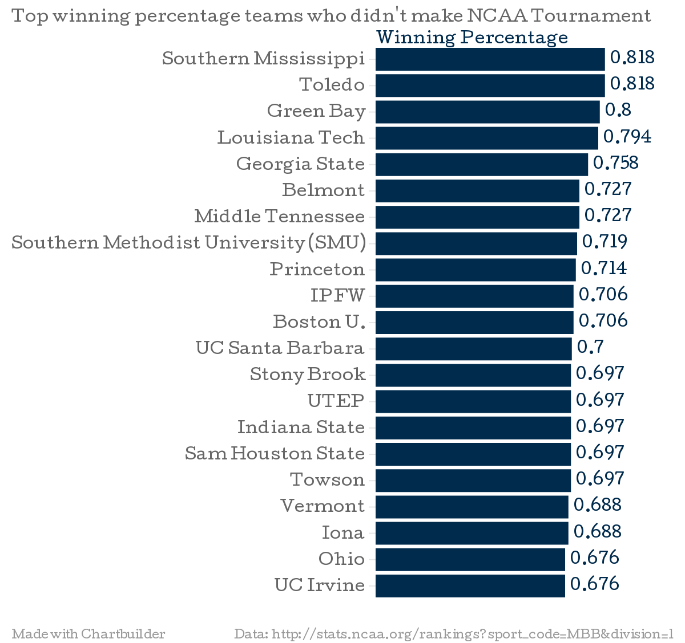
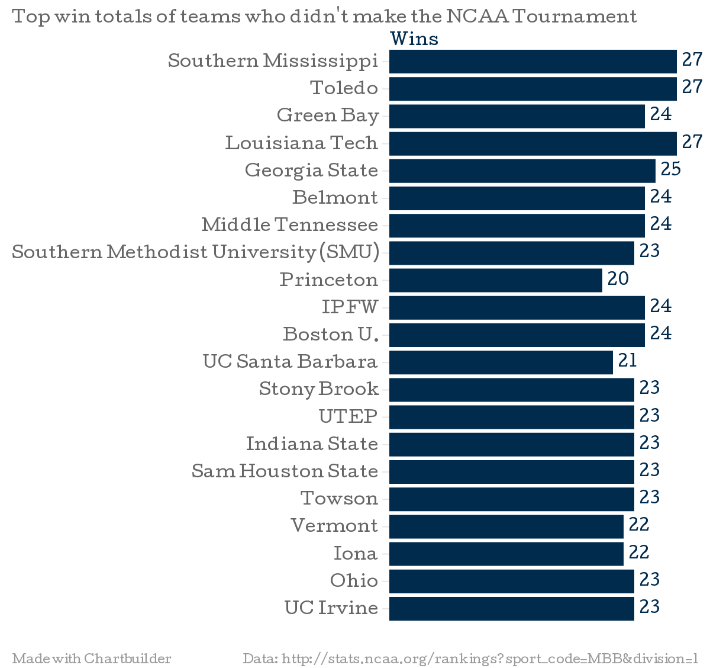

Created by Evan Troxel. "Follow" me on Twitter @Evan_Troxel
NCAA Tournament HISTORY: Wichita State (34 Wins, 0 Losses) is the first team since UNLV in 1991 to go into the tournament undefeated. Tournament Champions North Carolina Central University (MEAC) and Cal Poly (Big West) are making their first NCAA Division 1 Tournament appearance. For the second time since 1973, no teams from the state of Indiana are in the tournament.
Before you look farther at this webpage, I have an obsession with the NCAA Division 1 Men's Basketball Tournament every year. It's not just who plays who or who gets this or that ranking. It's basically everything. I wish the NCAA Selection Committee would get things right (but they DON'T)! The NCAA Selection Committee cannot seem to get anything right when it comes to the Division 1 NCAA Men's Basketball Tournament, (as far as I'm concerned).
For example, the NCAA Selection Committee puts Spokane, Washington as part of the East Region for a second and third round game! (Yeah, that makes a lot of sense. NOT!) Spokane is in the WESTERN AND/OR NORTHERN United States! Spokane is definitely not in the eastern part of the United States!
Why does overall record matter? Overall record matters because to a degree it does say a lot about how good or bad of a team you are. In some ways, overall record probably could be seen as an average record.
Why does conference record matter? Conference record matters because if your team is winning many games against a tough opponent, it means your team is at least a good team. Scoring lots on offense and not giving up a lot of points on defense is a sign of a good (maybe even a great team).
So first you will see who the Conference Tournament Champions and Regular Season Conference Champions are for the 2013-14 season and then we will analyze who SHOULD and SHOULD NOT have made the 2013-14 NCAA Division 1 Men's Basketball Tournament. After that, I will make a case for a handful of teams that they deserve to be in the NCAA Tournament for the 2013-14 season. At the end of my case for each team, I determine if the team actually deserves to be in the NCAA Tournament. Finally, there are some charts at the bottom of this webpage about the handful of teams that I make a case for.
Conference Tournament Champions (2013-14 season)
Now, let's look at the Regular Season Conference Champions.
Regular Season Conference Champions (2013-2014 season)
So what teams SHOULD have got into the NCAA Tournament? And what teams SHOULD NOT HAVE made it to the NCAA Tournament?
Teams who should not be in the NCAA Tournament
Teams who should be in the NCAA Tournament
Now, let's look at the overall win-loss records of teams who didn't make the NCAA Tournament:
Southern Mississippi had an overall record of 27 wins and 6 losses.
Toledo had an overall record of 27 wins and 6 losses.
Green Bay had an overall record of 24 wins and 6 losses.
Louisiana Tech had an overall record of 27 wins and 7 losses.
Georgia State had an overall record of 25 wins and 8 losses.
Belmont had an overall record of 24 wins and 9 losses.
Middle Tennessee had an overall record of 24 wins and 9 losses.
Southern Methodist University (SMU) had an overall record of 23 wins and 9 losses.
Princeton had an overall record of 20 wins and 8 losses.
IPFW had an overall record of 24 wins and 10 losses.
Boston University had an overall record of 24 wins and 10 losses.
UC Santa Barbara had an overall record of 21 wins and 9 losses.
Stony Brook had an overall record of 23 wins and 10 losses.
UTEP had an overall record of 23 wins and 10 losses.
Indiana State had an overall record of 23 wins and 10 losses.
Sam Houston State had an overall record of 23 wins and 10 losses.
Towson had an overall record of 23 wins and 10 losses.
Vermont had an overall record of 22 wins and 10 losses.
Iona had an overall record of 22 wins and 10 losses.
Ohio had an overall record of 23 wins and 11 losses.
UC Irvine had an overall record of 23 wins and 11 losses.
The teams listed above are the same teams that are listed below. What I am trying to do below, is to make a case for a handful of "bubble teams" that deserve to be in the NCAA Tournament (although none of the teams actually made the NCAA Tournament). I determined that some of the teams actually SHOULD have been in the NCAA Tournament because of their overall winning percentage, while other teams had good overall winning percentages but they just simply didn't win enough games and lost too many games (they just weren't "good enough"). The teams listed below are in alphabetical order (A-Z) by school name.
Belmont
Case: Before NCAA Tournament play started: This team was 11-1 at home, 9-7 on the road, and 3-1 at a neutral site. Conference (OVC) record 14-2. RPI is 57. Finished season by defeating Green Bay 80-65 and Robert Morris 82-71 before falling to Clemson 73-68 in NIT Tournament. 12-1 at home (Robert Morris-NIT Tournament, 10-8 on road (Green Bay & Clemson-NIT Tournament), 26-10 overall. This team should have made the NCAA Tournament.
Boston UniversityCase: Before NCAA Tournament play started: This team was 11-5 at home, 11-4 on the road, and 2-1 at a neutral site. Conference (Patriot) record: 15-3. RPI is 84. Finished season by losing to Illinois 66-62 in NIT Tournament. 11-6 at home (Illinois-NIT Tournament), 11-4 on the road, and 24-11 overall. This team should have made the NCAA Tournament.
Georgia StateCase: Before NCAA Tournament play started: This team was 11-0 at home, 10-6 on the road, and 2-2 at a neutral site. Conference (Sun Belt) Record 17-1. RPI is 76. Finished season by losing at Clemson 78-66 in NIT Tournament. 11-0 at home, 10-7 on road (Clemson in NIT Tournament), and 25-9 overall. This team should have made the NCAA Tournament.
Green BayCase: Before NCAA Tournament play started: This team was 10-3 at home, 9-2 on the road, and 2-1 at a neutral site. Conference (Horizon) record is 14-2. RPI is 58. Finished season: 10-4 at home (loss to Belmont 80-65 in NIT Tournament), 9-2 on the road, and 24-7 overall. This team should have made the NCAA Tournament.
Indiana StateCase: Before NCAA Tournament play started: This team was 10-2 at home, 8-6 on the road, and 3-2 at a neutral site. Conference (MVC) record: 12-6. RPI is 71. Finished season by losing at Arkansas 91-71 in NIT Tournament. 10-2 at home, 8-7 on the road, and 23-11 overall. According to the NCAA and myself, this team didn't have a good enough record to get into the NCAA Tournament.
IonaCase: Before NCAA Tournament play started: This team was 11-2 at home, 9-7 on the road, and 2-1 at a neutral site. Conference (MAAC) record: 17-3. RPI is 59. Finished season by losing at Louisiana Tech 89-88 in NIT Tournament. 11-2 at home, 9-8 on the road, and 22-11 overall. According to the NCAA and myself, this team didn't have a good enough record to get into the NCAA Tournament.
IPFWCase: Before NCAA Tournament play started: This team was 9-2 at home, 8-7 on the road, and 4-1 at a neutral site. Conference (Summit) record: 10-4. RPI is 115. Finished season by defeating Akron 97-91 in CIT before falling to Virginia Military 106-95. 10-2 at home (Akron-CIT), 8-8 on the road (Virginia Military-CIT), and 25-11 overall. This team should have made the NCAA Tournament.
Louisiana TechCase: Before NCAA Tournament play started: This team was 12-1 at home, 9-4 on the road, and 5-2 at a neutral site. Conference (C-USA) record is 13-3. RPI is 62. Finished season by defeating Iona and Georgia before falling to Florida State in NIT Tournament. 13-1 at home (defeated Iona 89-88), 10-5 on road (defeated Georgia 79-71 and fell to Florida State 78-75), and 29-8 overall. This team should have made the NCAA Tournament.
Middle TennesseeCase: Before NCAA Tournament play started: This team was 12-2 at home, 8-5 on the road, and 2-2 at a neutral site. Conference (C-USA) record is 13-3. RPI is 64. Finished season not making NCAA or NIT Tournaments. Overall record 24-9. This team should have made the NCAA Tournament.
OhioCase: Before NCAA Tournament play started: This team was 11-6 at home, 10-4 on the road, and 1-1 at a neutral site. Conference (MAC) record: 11-7. RPI is 87. Finished season in CIT by winning two games vs. Cleveland State 64-62 and vs. Wright State 56-54 before losing to Virginia Military 92-90. 13-7 at home, 10-4 on the road, and 25-12 overall. According to the NCAA and myself, this team didn't have a good enough record to get into the NCAA Tournament.
PrincetonCase: Before NCAA Tournament play started: This team was 10-2 at home, 8-5, on the road, and 1-1 at a neutral site. Conference (Ivy) record: 8-6. RPI is 122. Finished season by defeating Tulane 56-55 and then falling to Fresno State 72-56. 10-2 at home, 9-6 (Tulane and Fresno State-CBI Tournament) on the road, and 21-9 overall. This team should have made the NCAA Tournament.
Sam Houston StateCase: Before NCAA Tournament play started: This team was 9-1 at home, 6-6 on the road, and 5-2 at a neutral site. Conference (Southland) record: 13-5. RPI is 112. Finished season by defeating Alabama State 71-49 before losing to San Diego 77-72 in CIT. 10-2 at home (Alabama State & San Diego-CIT), 6-6 on the road, and 24-11 overall. According to the NCAA and myself, this team didn't have a good enough record to get into the NCAA Tournament.
Southern Methodist University (SMU)Case: Before NCAA Tournament play started: This team was 15-1 at home, 6-6 on the road, and 2-2 at a neutral site. Conference (AAC) record: 12-6. RPI is 53. Won three straight home games in NIT Tournament over UC Irvine 68-54, LSU 80-67, California 67-65. In New York, won 65-59 over Clemson in the NIT Tournament Semifinals before losing to Minnesota 63-65 in NIT Tournament Finals. Finished season 18-1 at home, 6-6 on the road, and 27-10 overall. This team should have made the NCAA Tournament.
Southern MississippiCase: Before NCAA Tournament play started: This team had a perfect record at home of 12-0. Won ten games on the road, and is 3-1 at a neutral site. Conference (C-USA) record is 13-3. RPI is 33. Finished season: By defeating Toledo and Missouri before falling to Minnesota in NIT Tournament. 13-0 at home by defeating Toledo 66-59 in NIT Tournament, 11-6 on the road (defeated Missouri 71-63 before falling to Minnesota 81-73 in NIT Tournament) and 29-7 overall. This team should have made the NCAA Tournament.
Stony BrookCase: Before NCAA Tournament play started: This team was 11-3 at home, 8-5 on the road, and 3-2 at a neutral site. Conference (America East) record: 13-3. RPI is 165. Finished season by falling to Siena 65-55 in CBI Tournament. 11-3 at home, 8-6 on the road (Siena-CBI Tournament), and 23-11 overall. This team should have made the NCAA Tournament.
ToledoCase: Before NCAA Tournament play started: This team has a home record of 14-0. This team is 9-5 on the road, and is 3-1 at a neutral site. Conference (MAC) Record is 14-4. RPI is 38. Finished season: 14-0 at home, 9-6 on the road (loss at Southern Mississippi 81-73 in NIT Tournament), and 27-7 overall. This team should have made the NCAA Tournament.
TowsonCase: Before NCAA Tournament play started: This team was 13-1 at home, 7-7 on the road, and 1-2 at a neutral site. Conference (CAA) record: 13-3. RPI is 95. Finished season by winning two games in CIT: at USC Upstate 63-60 and at East Tennessee State 83-77 before losing at Murray State 85-73. Finished season 13-1 at home, 9-8 on the road, and 25-11 overall. According to the NCAA and myself, this team didn't have a good enough record to get into the NCAA Tournament.
UC IrvineCase: Before NCAA Tournament play started: This team was 10-4 at home, 10-6 on the road, and 1-1 at a neutral site. Conference (Big West) record: 13-3. RPI is 111. Finished season in NIT Tournament by losing at Southern Methodist University 68-54. 10-4 at home, 10-7 on the road, and 23-12 overall. According to the NCAA and myself, this team didn't have a good enough record to get into the NCAA Tournament.
UC Santa BarbaraCase: Before NCAA Tournament play started: This team was 8-3 at home, 9-5 on the road, and 2-1 at a neutral site. Conference (Big West) record: 12-4. RPI is 107. Finished season by not making it into the NCAA or NIT Tournaments. Overall record 21-9. This team should have made the NCAA Tournament.
UTEPCase: Before NCAA Tournament play started: This team was 12-6 at home, 8-2 on the road, and 1-2 at a neutral site. Conference (C-USA) record: 12-4. RPI is 103. Finished season by losing to Fresno State 61-56 in CBI Tournament. 12-7 at home, 8-2 on the road, and 23-11 overall. According to the NCAA and myself, this team didn't have a good enough record to get into the NCAA Tournament.
VermontCase: Before NCAA Tournament play started: This team was 9-2 at home, 9-8 on the road, and 2-0 at a neutral site. Conference (America East) record: 15-1. RPI is 101. Finished season by losing at Georgia 63-56 in NIT Tournament. 9-2 at home, 9-9 on the road (Georgia-NIT Tournament), and overall record 22-11. According to the NCAA and myself, this team didn't have a good enough record to get into the NCAA Tournament.
The winning percentages shown in the chart below are of teams who did not make it into the 2013-14 NCAA Division 1 Men's Basketball Tournament. If the 2013-14 NCAA Division 1 Men's Basketball Tournament was solely based on top 64 or top 68 teams winning percentages, Stony Brook and all the teams above it would have gotten into the 2013-14 NCAA Division 1 Men's Basketball Tournament.
Shown in the chart below is the win totals of a handful of teams who did not make it into the 2013-13 NCAA Division 1 Men's Basketball Tournament. If the 2013-14 NCAA Division 1 Men's Basketball Tournament was solely based on top 64 or top 68 teams winning percentages, Stony Brook and all the teams above it would have gotten into the 2013-14 NCAA Division 1 Men's Basketball Tournament.
Why should I even bother to watch the NCAA Tournament? The NCAA Tournament is exciting and there are upsets every year. However, the selection committee sometimes ranks the team with the worse winning percentage higher than the team with a better overall winning percentage.
Conference Tournament Champions (2013-14 season)
Teams who should not be in the NCAA Tournament.
Teams who should be in the NCAA Tournament